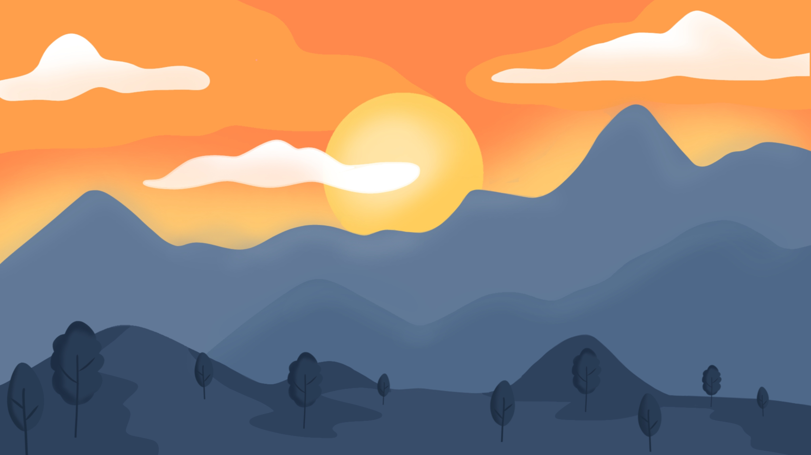

あなたが好きな山を探す(全5問)
質問3: あなたが好きな週末の過ごし方
あなたにあった山は
いつでも楽しく登れる：立石山(福岡・糸島市)
スイーツ × 楽しい山
普段忙しい生活の中、息詰まるところもあるでしょう。 そんなあなたに、 気軽に登れて、夕陽を眺めつつ、 糸島で楽しく遊んでいたことを思い出しながら、 夕陽を見ることはステキじゃないですか？ 立石山の登山口は芥屋第一駐車場から徒歩5分。 登山コース自体の難易度は低く、 約40分で山頂へ着きます。 毎年ご来光見にこられる方もいらっしゃいますので、 ぜひ、トトロの森を眺めて、海の景色を堪能して、 日常の疲れを癒してください！
あなたにあった山は
鬼滅の刃の原点：宝満山(福岡・太宰府)
アニメ × アクティブな山
あなたは忙しいのあまりに、運動不足になりがちかもしれないです。
きっと体を動かしたい日もあるでしょう。
そんなあなたに、
ほどいい運動になる、ちょっとだけ非日常も感じられる
あなたにあった山は
アクティブな人向けのくじゅう連山
温泉 × 肉 × のんびりな山
あなたは日頃ものすごく忙しいし、ストレスの多い日常を過ごしているでしょう。
そんなあなたに、のんびりとハイキングしてから温泉にあか牛を食べる
ちょっと贅沢なコースで日常なストレスも解放されるでしょう。